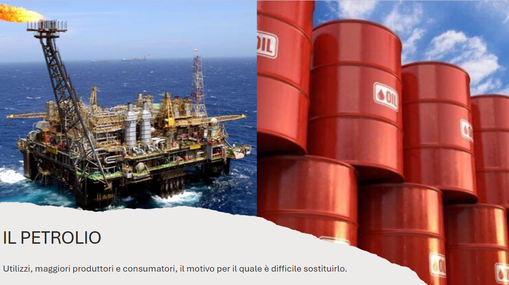
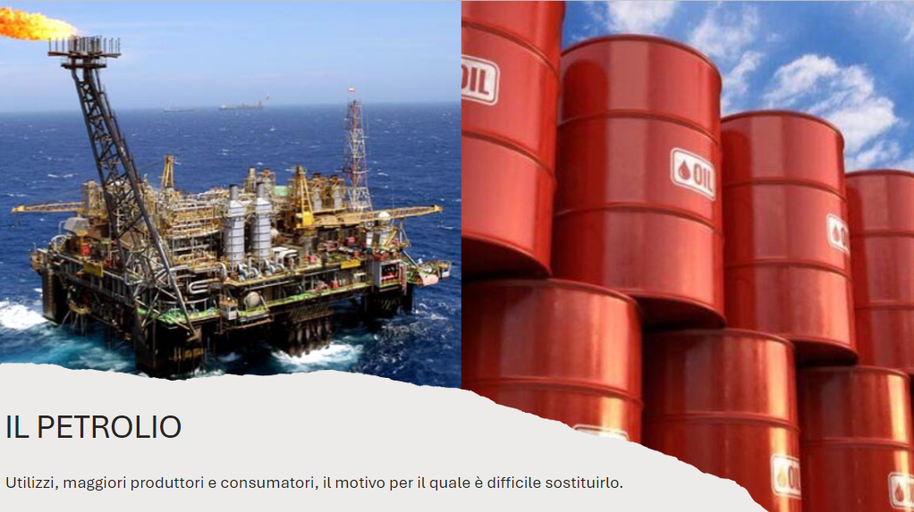

Il petrolio: come si forma e usi
- Residui di alghe morte e plancton di depositano sul fondo.
- Con il tempo, altri sedimenti schiacciano i residui, impedendo la completa decomposizione.
- I residui subiscono trasformazioni fisiche e chimiche grazie all'alta pressione e temperatura.
- Questo materiale si trasforma in kerogene, che a sua volta si rompe e diventa una grande quantità di
idrocarburi.
- In seguito, gli idrocarburi (petrolio) si muove verso rocce più permeabili e porose.
- Il petrolio si "intrappola" in queste rocce, che verranno poi identificate come giacimenti
petroliferi
 

forse ci ha aiutato il leoz@tm